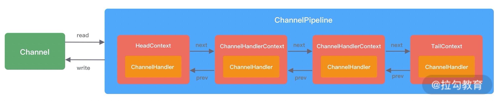
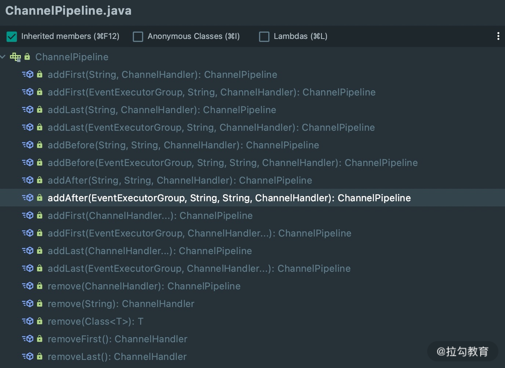
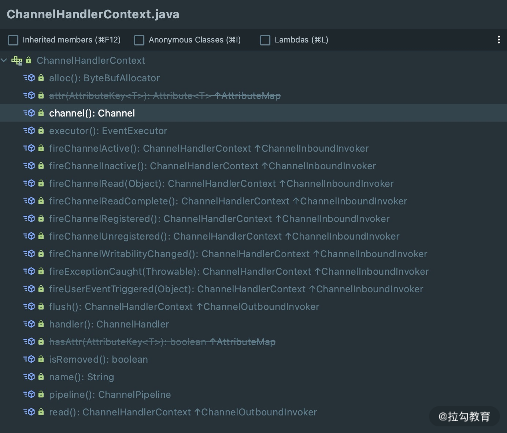

- 00 学好 Netty，是你修炼 Java 内功的必经之路.md.html
- 01 初识 Netty：为什么 Netty 这么流行？.md.html
- 02 纵览全局：把握 Netty 整体架构脉络.md.html
- 03 引导器作用：客户端和服务端启动都要做些什么？.md.html
- 04 事件调度层：为什么 EventLoop 是 Netty 的精髓？.md.html
- 05 服务编排层：Pipeline 如何协调各类 Handler ？.md.html
- 06 粘包拆包问题：如何获取一个完整的网络包？.md.html
- 07 接头暗语：如何利用 Netty 实现自定义协议通信？.md.html
- 08 开箱即用：Netty 支持哪些常用的解码器？.md.html
- 09 数据传输：writeAndFlush 处理流程剖析.md.html
- 10 双刃剑：合理管理 Netty 堆外内存.md.html
- 11 另起炉灶：Netty 数据传输载体 ByteBuf 详解.md.html
- 12 他山之石：高性能内存分配器 jemalloc 基本原理.md.html
- 13 举一反三：Netty 高性能内存管理设计（上）.md.html
- 14 举一反三：Netty 高性能内存管理设计（下）.md.html
- 15 轻量级对象回收站：Recycler 对象池技术解析.md.html
- 16 IO 加速：与众不同的 Netty 零拷贝技术.md.html
- 17 源码篇：从 Linux 出发深入剖析服务端启动流程.md.html
- 18 源码篇：解密 Netty Reactor 线程模型.md.html
- 19 源码篇：一个网络请求在 Netty 中的旅程.md.html
- 20 技巧篇：Netty 的 FastThreadLocal 究竟比 ThreadLocal 快在哪儿？.md.html
- 21 技巧篇：延迟任务处理神器之时间轮 HashedWheelTimer.md.html
- 22 技巧篇：高性能无锁队列 Mpsc Queue.md.html
- 23 架构设计：如何实现一个高性能分布式 RPC 框架.md.html
- 24 服务发布与订阅：搭建生产者和消费者的基础框架.md.html
- 25 远程通信：通信协议设计以及编解码的实现.md.html
- 26 服务治理：服务发现与负载均衡机制的实现.md.html
- 27 动态代理：为用户屏蔽 RPC 调用的底层细节.md.html
- 28 实战总结：RPC 实战总结与进阶延伸.md.html
- 29 编程思想：Netty 中应用了哪些设计模式？.md.html
- 30 实践总结：Netty 在项目开发中的一些最佳实践.md.html
- 31 结束语 技术成长之路：如何打造自己的技术体系.md.html
29 编程思想：Netty 中应用了哪些设计模式？
设计模式的运用是面试过程中常考的，学习设计模式切勿死记硬背，结合优秀项目的源码去理解设计模式的使用会事半功倍。Netty 源码中运用了大量的设计模式，常见的设计模式在 Netty 源码中都有所体现。本节课我们便一起梳理 Netty 源码中所包含的设计模式，希望能帮助你更深入地了解 Netty 的设计精髓，并可以结合 Netty 源码向面试官讲述你对设计模式的理解。
单例模式
单例模式是最常见的设计模式，它可以保证全局只有一个实例，避免线程安全问题。单例模式有很多种实现方法，其中我比较推荐三种最佳实践：双重检验锁、静态内部类方式、饿汉方式和枚举方式，其中双重检验锁和静态内部类方式属于懒汉式单例，饿汉方式和枚举方式属于饿汉式单例。
双重检验锁
在多线程环境下，为了提高实例初始化的性能，不是每次获取实例时在方法上加锁，而是当实例未创建时才会加锁，如下所示：
public class SingletonTest {
private SingletonTest instance;
public static SingletonTest getInstance() {
if (instance == null) {
synchronized (this) {
if (instance == null) {
instance = new SingletonTest();
}
}
}
return instance;
}
}
静态内部类方式
静态内部类方式实现单例巧妙地利用了 Java 类加载机制，保证其在多线程环境下的线程安全性。当一个类被加载时，其静态内部类是不会被同时加载的，只有第一次被调用时才会初始化，而且我们不能通过反射的方式获取内部的属性。由此可见，静态内部类方式实现单例更加安全，可以防止被反射入侵。具体实现方式如下：
public class SingletonTest {
private SingletonTest() {
}
public static Singleton getInstance() {
return SingletonInstance.instance;
}
private static class SingletonInstance {
private static final Singleton instance = new Singleton();
}
}
饿汉方式
饿汉式实现单例非常简单，类加载的时候就创建出实例。饿汉方式使用私有构造函数实现全局单个实例的初始化，并使用 public static final 加以修饰，实现延迟加载和保证线程安全性。实现方式如下所示：
public class SingletonTest {
private static Singleton instance = new Singleton();
private Singleton() {
}
public static Singleton getInstance() {
return instance;
}
}
枚举方式
枚举方式是一种天然的单例实现，在项目开发中枚举方式是非常推荐使用的。它能够保证序列化和反序列化过程中实例的唯一性，而且不用担心线程安全问题。枚举方式实现单例如下所示：
public enum SingletonTest {
SERVICE_A {
@Override
protected void hello() {
System.out.println("hello, service A");
}
},
SERVICE_B {
@Override
protected void hello() {
System.out.println("hello, service B");
}
};
protected abstract void hello();
}
在《源码篇：解密 Netty Reactor 的线程模型》课程中，我们介绍了 NioEventLoop 的核心原理。NioEventLoop 通过核心方法 select() 不断轮询注册的 I/O 事件，Netty 提供了选择策略 SelectStrategy 对象，它用于控制 select 循环行为，包含 CONTINUE、SELECT、BUSY_WAIT 三种策略。SelectStrategy 对象的默认实现就是使用的饿汉式单例，源码如下：
final class DefaultSelectStrategy implements SelectStrategy {
static final SelectStrategy INSTANCE = new DefaultSelectStrategy();
private DefaultSelectStrategy() { }
@Override
public int calculateStrategy(IntSupplier selectSupplier, boolean hasTasks) throws Exception {
return hasTasks ? selectSupplier.get() : SelectStrategy.SELECT;
}
}
此外 Netty 中还有不少饿汉方式实现单例的实践，例如 MqttEncoder、ReadTimeoutException 等。
工厂方法模式
工厂模式封装了对象创建的过程，使用者不需要关心对象创建的细节。在需要生成复杂对象的场景下，都可以使用工厂模式实现。工厂模式分为三种：简单工厂模式、工厂方法模式和抽象工厂模式。
- 简单工厂模式。定义一个工厂类，根据参数类型返回不同类型的实例。适用于对象实例类型不多的场景，如果对象实例类型太多，每增加一种类型就要在工厂类中增加相应的创建逻辑，这是违背开放封闭原则的。
- 工厂方法模式。简单工厂模式的升级版，不再是提供一个统一的工厂类来创建所有对象的实例，而是每种类型的对象实例都对应不同的工厂类，每个具体的工厂类只能创建一个类型的对象实例。
- 抽象工厂模式。较少使用，适用于创建多个产品的场景。如果按照工厂方法模式的实现思路，需要在具体工厂类中实现多个工厂方法，是非常不友好的。抽象工厂模式就是把这些工厂方法单独剥离到抽象工厂类中，然后创建工厂对象并通过组合的方式来获取工厂方法。
Netty 中使用的就是工厂方法模式，这也是项目开发中最常用的一种工厂模式。工厂方法模式如何使用呢？我们先来看个简单的例子：
public class TSLAFactory implements CarFactory {
@Override
public Car createCar() {
return new TSLA();
}
}
public class BMWFactory implements CarFactory {
@Override
public Car createCar() {
return new BMW();
}
}
Netty 在创建 Channel 的时候使用的就是工厂方法模式，因为服务端和客户端的 Channel 是不一样的。Netty 将反射和工厂方法模式结合在一起，只使用一个工厂类，然后根据传入的 Class 参数来构建出对应的 Channel，不需要再为每一种 Channel 类型创建一个工厂类。具体源码实现如下：
public class ReflectiveChannelFactory<T extends Channel> implements ChannelFactory<T> {
private final Constructor<? extends T> constructor;
public ReflectiveChannelFactory(Class<? extends T> clazz) {
ObjectUtil.checkNotNull(clazz, "clazz");
try {
this.constructor = clazz.getConstructor();
} catch (NoSuchMethodException e) {
throw new IllegalArgumentException("Class " + StringUtil.simpleClassName(clazz) +
" does not have a public non-arg constructor", e);
}
}
@Override
public T newChannel() {
try {
return constructor.newInstance();
} catch (Throwable t) {
throw new ChannelException("Unable to create Channel from class " + constructor.getDeclaringClass(), t);
}
}
@Override
public String toString() {
return StringUtil.simpleClassName(ReflectiveChannelFactory.class) +
'(' + StringUtil.simpleClassName(constructor.getDeclaringClass()) + ".class)";
}
}
虽然通过反射技术可以有效地减少工厂类的数据量，但是反射相比直接创建工厂类有性能损失，所以对于性能敏感的场景，应当谨慎使用反射。
责任链模式
想必学完本专栏的前面课程后，责任链模式大家应该再熟悉不过了，自然而然联想到 ChannlPipeline 和 ChannelHandler。ChannlPipeline 内部是由一组 ChannelHandler 实例组成的，内部通过双向链表将不同的 ChannelHandler 链接在一起，如下图所示。

对于 Netty 中责任链模式的实现，也遵循了责任链模式的四个基本要素：
责任处理器接口
ChannelHandler 对应的就是责任处理器接口，ChannelHandler 有两个重要的子接口：ChannelInboundHandler和ChannelOutboundHandler，分别拦截入站和出站的各种 I/O 事件。
动态创建责任链，添加、删除责任处理器
ChannelPipeline 负责创建责任链，其内部采用双向链表实现，ChannelPipeline 的内部结构定义如下所示：
public class DefaultChannelPipeline implements ChannelPipeline {
static final InternalLogger logger = InternalLoggerFactory.getInstance(DefaultChannelPipeline.class);
private static final String HEAD_NAME = generateName0(HeadContext.class);
private static final String TAIL_NAME = generateName0(TailContext.class);
// 省略其他代码
final AbstractChannelHandlerContext head; // 头结点
final AbstractChannelHandlerContext tail; // 尾节点
private final Channel channel;
private final ChannelFuture succeededFuture;
private final VoidChannelPromise voidPromise;
private final boolean touch = ResourceLeakDetector.isEnabled();
// 省略其他代码
}
ChannelPipeline 提供了一系列 add 和 remove 相关接口用于动态添加和删除 ChannelHandler 处理器，如下所示：

上下文
从 ChannelPipeline 内部结构定义可以看出，ChannelHandlerContext 负责保存责任链节点上下文信息。ChannelHandlerContext 是对 ChannelHandler 的封装，每个 ChannelHandler 都对应一个 ChannelHandlerContext，实际上 ChannelPipeline 维护的是与 ChannelHandlerContext 的关系。
责任传播和终止机制
ChannelHandlerContext 提供了 fire 系列的方法用于事件传播，如下所示：

以 ChannelInboundHandlerAdapter 的 channelRead 方法为例，ChannelHandlerContext 会默认调用 fireChannelRead 方法将事件默认传递到下一个处理器。如果我们重写了 ChannelInboundHandlerAdapter 的 channelRead 方法，并且没有调用 fireChannelRead 进行事件传播，那么表示此次事件传播已终止。
观察者模式
观察者模式有两个角色：观察者和被观察。被观察者发布消息，观察者订阅消息，没有订阅的观察者是收不到消息的。首先我们通过一个简单的例子看下观察者模式的是如何实现的。
// 被观察者
public interface Observable {
void registerObserver(Observer observer);
void removeObserver(Observer observer);
void notifyObservers(String message);
}
// 观察者
public interface Observer {
void notify(String message);
}
// 默认被观察者实现
public class DefaultObservable implements Observable {
private final List<Observer> observers = new ArrayList<>();
@Override
public void registerObserver(Observer observer) {
observers.add(observer);
}
@Override
public void removeObserver(Observer observer) {
observers.remove(observer);
}
@Override
public void notifyObservers(String message) {
for (Observer observer : observers) {
observer.notify(message);
}
}
}
Netty 中观察者模式的运用非常多，但是并没有以上示例代码这么直观，我们平时经常使用的ChannelFuture#addListener 接口就是观察者模式的实现。我们先来看下 ChannelFuture 使用的示例：
ChannelFuture channelFuture = channel.writeAndFlush(object);
channelFuture.addListener(future -> {
if (future.isSuccess()) {
// do something
} else {
// do something
}
});
addListener 方法会将添加监听器添加到 ChannelFuture 当中，并在 ChannelFuture 执行完毕的时候立刻通知已经注册的监听器。所以 ChannelFuture 是被观察者，addListener 方法用于添加观察者。
建造者模式
建造者模式非常简单，通过链式调用来设置对象的属性，在对象属性繁多的场景下非常有用。建造者模式的优势就是可以像搭积木一样自由选择需要的属性，并不是强绑定的。对于使用者来说，必须清楚需要设置哪些属性，在不同场景下可能需要的属性也是不一样的。
Netty 中 ServerBootStrap 和 Bootstrap 引导器是最经典的建造者模式实现，在构建过程中需要设置非常多的参数，例如配置线程池 EventLoopGroup、设置 Channel 类型、注册 ChannelHandler、设置 Channel 参数、端口绑定等。ServerBootStrap 引导器的具体使用可以参考《引导器作用：客户端和服务端启动都要做些什么？》课程，在此我就不多作赘述了。
策略模式
策略模式针对同一个问题提供多种策略的处理方式，这些策略之间可以相互替换，在一定程度上提高了系统的灵活性。策略模式非常符合开闭原则，使用者在不修改现有系统的情况下选择不同的策略，而且便于扩展增加新的策略。
Netty 在多处地方使用了策略模式，例如 EventExecutorChooser 提供了不同的策略选择 NioEventLoop，newChooser() 方法会根据线程池的大小是否是 2 的幂次，以此来动态的选择取模运算的方式，从而提高性能。EventExecutorChooser 源码实现如下所示：
public final class DefaultEventExecutorChooserFactory implements EventExecutorChooserFactory {
public static final DefaultEventExecutorChooserFactory INSTANCE = new DefaultEventExecutorChooserFactory();
private DefaultEventExecutorChooserFactory() { }
@SuppressWarnings("unchecked")
@Override
public EventExecutorChooser newChooser(EventExecutor[] executors) {
if (isPowerOfTwo(executors.length)) {
return new PowerOfTwoEventExecutorChooser(executors);
} else {
return new GenericEventExecutorChooser(executors);
}
}
// 省略其他代码
}
装饰者模式
装饰器模式是对被装饰类的功能增强，在不修改被装饰类的前提下，能够为被装饰类添加新的功能特性。当我们需要为一个类扩展功能时会使用装饰器模式，但是该模式的缺点是需要增加额外的代码。我们先通过一个简单的例子学习下装饰器模式应当如何使用，如下所示：
public interface Shape {
void draw();
}
class Circle implements Shape {
@Override
public void draw() {
System.out.print("draw a circle.");
}
}
abstract class ShapeDecorator implements Shape {
protected Shape shapeDecorated;
public ShapeDecorator(Shape shapeDecorated) {
this.shapeDecorated = shapeDecorated;
}
public void draw() {
shapeDecorated.draw();
}
}
class FillReadColorShapeDecorator extends ShapeDecorator {
public FillReadColorShapeDecorator(Shape shapeDecorated) {
super(shapeDecorated);
}
@Override
public void draw() {
shapeDecorated.draw();
fillColor();
}
private void fillColor() {
System.out.println("Fill Read Color.");
}
}
我们创建了一个 Shape 接口的抽象装饰类 ShapeDecorator，并维护 Shape 原始对象，FillReadColorShapeDecorator 是用于装饰 ShapeDecorator 的实体类，它不对 draw() 方法做任何修改，而是直接调用 Shape 对象原有的 draw() 方法，然后再调用 fillColor() 方法进行颜色填充。
下面我们再来看一下 Netty 中 WrappedByteBuf 是如何装饰 ByteBuf 的，源码如下所示：
class WrappedByteBuf extends ByteBuf {
protected final ByteBuf buf;
protected WrappedByteBuf(ByteBuf buf) {
if (buf == null) {
throw new NullPointerException("buf");
}
this.buf = buf;
}
@Override
public final boolean hasMemoryAddress() {
return buf.hasMemoryAddress();
}
@Override
public final long memoryAddress() {
return buf.memoryAddress();
}
// 省略其他代码
}
WrappedByteBuf 是所有 ByteBuf 装饰器的基类，它并没有什么特别的，也是在构造函数里传入了原始的 ByteBuf 实例作为被装饰者。WrappedByteBuf 有两个子类 UnreleasableByteBuf 和 SimpleLeakAwareByteBuf，它们是真正实现对 ByteBuf 的功能增强，例如 UnreleasableByteBuf 类的 release() 方法是直接返回 false 表示不可被释放，源码实现如下所示。
final class UnreleasableByteBuf extends WrappedByteBuf {
private SwappedByteBuf swappedBuf;
UnreleasableByteBuf(ByteBuf buf) {
super(buf instanceof UnreleasableByteBuf ? buf.unwrap() : buf);
}
@Override
public boolean release() {
return false;
}
// 省略其他代码
}
不知道你会不会有一个疑问，装饰器模式和代理模式都是实现目标类增强，他们有什么区别吗？装饰器模式和代理模式的实现确实是非常相似的，都需要维护原始的目标对象，装饰器模式侧重于为目标类增加新的功能，代理模式更侧重于在现有功能的基础上进行扩展。
总结
学习设计模式切勿死记硬背，不仅要吸收设计模式的思想，还要理解为什么使用该设计模式。锻炼代码设计能力比较好的办法就是读优秀框架的源码，Netty 就是一个非常丰富的学习资源。我们需要了解源码中设计模式的使用场景，不断吸收消化，并能够做到在项目开发中学以致用。
本节课所介绍的设计模式在 Netty 中并不能涵盖所有，还有很多等待我们去挖掘。留一个课后任务，学习以下设计模式在 Netty 中的运用。
- 模板方法模式：ServerBootStrap 和 Bootstrap 的 init 过程实现；
- 迭代器模式：CompositeByteBuf；
- 适配器模式：ScheduledFutureTask。